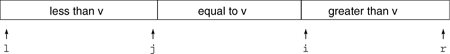
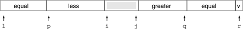
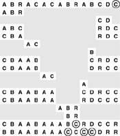

C++ Programming Robert Sedgewick - Princeton University Addison Wesley Professional Algorithms in C++, Parts 1–4: Fundamentals, Data Structure, Sorting, Searching, Third Edition
7.6. Duplicate Keys
Files with large numbers of duplicate sort keys arise frequently in applications. For example, we might wish to sort a large personnel file by year of birth, or even to use a sort to separate females from males.
When there are many duplicate keys present in the file to be sorted, the quicksort implementations that we have considered do not have unacceptably poor performance, but they can be substantially improved. For example, a file that consists solely of keys that are equal (just one value) does not need to be processed further, but our implementations so far keep partitioning down to small subfiles, no matter how big the file is (see Exercise 7.8). In a situation where there are large numbers of duplicate keys in the input file, the recursive nature of quicksort ensures that subfiles consisting solely of items with a single key value will occur often, so there is potential for significant improvement.
One straightforward idea is to partition the file into three parts, one each for keys smaller than, equal to, and larger than the partitioning element:

Accomplishing this partitioning is more complicated than the two-way partitioning that we have been using, and various different methods have been suggested for the task. It was a classical programming exercise popularized by Dijkstra as the Dutch National Flag problem, because the three possible key categories might correspond to the three colors on the flag (see reference section). For quicksort, we add the constraint that a single pass through the file must do the job—an algorithm that involves two passes through the data would slow down quicksort by a factor of two, even if there are no duplicate keys at all.
A clever method invented by Bentley and McIlroy in 1993 for three-way partitioning works by modifying the standard partitioning scheme as follows: Keep keys equal to the partitioning element that are encountered in the left subfile at the left end of the file, and keep keys equal to the partitioning element that are encountered in the right subfile at the right end of the file. During the partitioning process, we maintain the following situation:

Then, when the pointers cross and the precise location for the equal keys is known, we swap into position all the items with keys equal to the partitioning element. This scheme does not quite meet the requirement that three-way partitioning be accomplished in one pass through the file, but the extra overhead for duplicate keys is proportional to only the number of duplicate keys found. This fact has two implications: First, the method works well even if there are no duplicate keys, since there is no extra overhead. Second, the method is linear time when there is only a constant number of key values: Each partitioning phase removes from the sort all the keys with the same value as the partitioning element, so each key can be involved in at most a constant number of partitions.
Figure 7.12 illustrates the three-way partitioning algorithm on a sample file, and Program 7.5 is a quicksort implementation based on the method. The implementation requires the addition of just two if statements in the exchange loop, and just two for loops to complete partitioning by putting the keys equal to the partitioning element into position. It seems to require less code than other alternatives for maintaining three partitions. More important, it not only handles duplicate keys in as efficient a manner as possible, but also incurs a minimal amount of extra overhead in the case that there are no duplicate keys.
This diagram depicts the process of putting all keys equal to the partitioning element into position. As in Figure 7.2, we scan from the left to find an element that is not smaller than the partitioning element and from the right to find an element that is not larger than the partitioning element, then exchange them. If the element on the left after the exchange is equal to the partitioning element, we exchange it to the left end of the array; we proceed similarly on the right. When the pointers cross, we put the partitioning element into position as before (next-to-bottom line), then exchange all the keys equal to it into position on either side of it (bottom line).

Exercises |  7.34 Explain what happens when Program 7.5 is run on a randomly ordered file with (i) two distinct key values, and (ii) three distinct key values. 7.34 Explain what happens when Program 7.5 is run on a randomly ordered file with (i) two distinct key values, and (ii) three distinct key values.
| | 7.35 Modify Program 7.1 to return if all keys in the subfile are equal. Compare the performance of your program to Program 7.1 for large random files with keys having t distinct values for t = 2, 5, and 10. | | 7.36 Suppose that we scan over keys equal to the partitioning element in Program 7.2 instead of stopping the scans when we encounter them. Show that the running time of Program 7.1 would be quadratic in this case. |
Program 7.5. Quicksort with three-way partitioning|
This program is based on partitioning the array into three parts: elements smaller than the partitioning element (in a[l], ..., a[j]); elements equal to the partitioning element (in a[j+1], ..., a[i-1]); and elements larger than the partitioning element (in a[i], ..., a[r]). Then the sort can be completed with two recursive calls.
To accomplish the objective, the program keeps keys equal to the partitioning element on the left between l and p and on the right between q and r. In the partitioning loop, after the scan pointers stop and the items at i and j are exchanged, it checks each of those items to see whether it is equal to the partitioning element. If the one now on the left is equal to the partitioning element, it is exchanged into the left part of the array; if one now on the right is equal to the partitioning element, it is exchanged into the right part of the array.
After the pointers cross, the elements equal to the partitioning element are exchanged from the ends of the array into position. Then those keys can be excluded from the subfiles for the recursive calls.
template <class Item>
int operator==(const Item &A, const Item &B)
{ return !less(A, B) && !less(B, A); }
template <class Item>
void quicksort(Item a[], int l, int r)
{ int k; Item v = a[r];
if (r <= l) return;
int i = l-1, j = r, p = l-1, q = r;
for (;;)
{
while (a[++i] < v) ;
while (v < a[--j]) if (j == l) break;
if (i >= j) break;
exch(a[i],a[j]);
if (a[i] == v) { p++; exch(a[p],a[i]); }
if (v == a[j]) { q--; exch(a[q],a[j]); }
}
exch(a[i], a[r]); j = i-1; i = i+1;
for (k = l ; k <= p; k++, j--) exch(a[k],a[j]);
for (k = r-1; k >= q; k--, i++) exch(a[k],a[i]);
quicksort(a, l, j);
quicksort(a, i, r);
}
|
| | |  7.37 Prove that the running time of the program in Exercise 7.36 is quadratic for all files with O(1) distinct key values. 7.37 Prove that the running time of the program in Exercise 7.36 is quadratic for all files with O(1) distinct key values.
| | 7.38 Write a program to determine the number of distinct keys that occur in a file. Use your program to count the distinct keys in random files of N integers in the range 0 to M - 1, for M = 10, 100, and 1000, and for N = 103, 104, 105, and 106. |
|